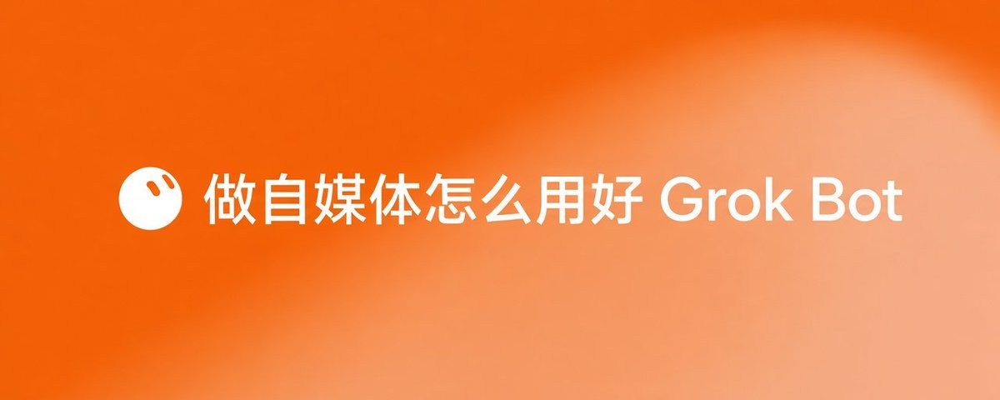

西堂 picks · 5/24
做自媒体怎么用好 Grok bot
@KinGao476942 · Kin · Tue Sep 15 05:44:37 +0000 2026

前几天有个朋友找我，他用 AI 做了个挺好用的小工具，两个晚上就做完了。做完的第二天他问我：东西是做出来了，可是没人知道它，接下来该怎么低成本推广和获客，朋友圈已经发过了。
我给他的答案只有一句：今天能拿到的所有推广办法里，性价比最高、门槛最低的那一条，就是做自媒体，你自己找选题、自己写内容、自己发出去，然后让 Grok Bot (xAI's AI assistant that comes with its own computer) 把这件事里最累的那几段活接过去。
先交代一下我是谁，方便你判断这篇内容值不值得往下读。我叫 Kin，目前是 SpaceXAI 的中国区大使，近期正在和朋友组织举办全国性的 Grok bot Meetup 活动，我自己也是一个非常热爱内容创作的创作者，最近大概 10 多天在推特涨了 2000 + 粉。更早之前，我在公司里操盘过一个 100 万粉的短视频账号，也孵化过一个 10 万粉的中视频账号，致力于专注研究 AI + 内容 + 商业的结合。
现在，我每天都在第一线，重度使用 Grok Bot：我的选题、我的文案、我的复盘，都是几个 Bot 陪着我一起干出来的，包括你正在读的这篇的底稿（当然，也融入了我很多个人的经验和润色）。
这篇文章写给三种人。
第一种，你想开始做自媒体，但还卡在「今天发什么」的这一步。
第二种，你用 AI 做出了产品或者有服务能力，但很少人知道你和你的产品。
第三种，你已经在做内容了，但更新没有规律，而且说不清自己为什么有时候火，有时候不火。
一、为什么偏偏是现在
过去两年，做东西的门槛塌了一大半。一个人靠 AI 就能在几个小时做出一个能用的产品，能画出一整套图，能剪出一条像模像样的片子。做东西不再是瓶颈。
瓶颈整个挪到了后半段：做出来之后，怎么推广出去，让人知道。
过去的传统老办法都挺贵。投广告需要钱，找达人推广需要钱，做线下活动更需要钱。对一个刚起步的 OPC 来说，这些都不现实。剩下那条真正便宜的路，就是——做自媒体，自己写、自己发，用内容把流量和用户一点点攒起来。
问题在于，自己写自己发这件事，真干起来是体力活。它至少包含三段最让人崩溃的重复劳动：
第一段是找选题。每天睁开眼要回答「今天发什么」，一周之后你就会发现自己脑子里空了。
第二段是找对标。你知道该看别人怎么写的，可是刷了两小时之后，你只记得几个标题，说不清那条为什么火。
第三段是把想法变成稿子。心里有个点子，落到屏幕上却总是写不出第一行。
这三段活，恰好是 Grok Bot 最擅长且能够自动化的。它跟一个普通的 AI 聊天机器人有本质区别：它有自己的云电脑，可以 7X24 小时工作，它能接入各种插件和 Cli，能接住你的文件、表格、文档和仓库，能记住你是谁、你的账号什么调性、你的读者是谁。所以它能替你养出一个只属于你、持续进化的内容选题库。普通的 AI 聊天机器人则做不到这件事，你每次打开都得从零开始项目，重新介绍一遍背景。
有了 Grok Bot，我们做自媒体内容，不需要熬夜、不需要雇运营，你要做的是把想让 Grok bot 干的活，用人话说清楚就行。
二、三条传播底层，我到今天还在用
在展开聊具体的 Grok bot 技巧之前，我觉得更重要的是，我们得先聊清楚人为什么会点开、会看完、会转发你的内容。这几条传播的底层规律，我从做内容开始的时候一直用到现在，换了平台也没失效。
1）HKRR：快乐、知识、共鸣、节奏感
这套内容爆款公式，出自B 站百大 UP 主——影视飓风的 Tim，四个字母对应四样东西：
H = happiness，快乐。 看的人图一乐。轻松、好笑、解压、爽，这一类的价值经常被做内容的人看轻，其实它是最硬的通货。人打开手机的默认目的就是找点乐子，你的内容要是让他笑了一下，他就不亏。
K = knowledge，知识。 看完他学到了东西，手里多了一个刚才还没有的做法、参数、名词或者判断。这一条是做工具类、教程类内容的人的主战场，我自己的推特绝大部分内容，吃的都是这一口。判断标准很直白：这条内容里有没有信息和知识增量，还是把大家都知道的话又说了一遍。
R = resonance，共鸣。 观众看完觉得「这说的就是我」。你把他的处境、他的憋屈、他的犹豫准确讲出来了。共鸣是转发率最高的那一档，因为转发这件事本身就是在替自己说话、做价值观的表达。
R = rhythm，节奏感。 这一条是前面三条的底座。信息推进的速度、每一段之间的落差、什么时候给个爆点什么时候让人喘口气，都在这里。前面三样再足，节奏拖了，钩子不够有吸引力、人照样在第五秒划走。
我用它的方式很简单：一条内容至少要占住四样里的一样，占住两样以上算合格，四样一样都没占的直接毙掉。文字和视频通用——文章的第一屏、帖子的第一句、视频的前三秒，检查的是同一件事。
顺带说一句，节奏感是最容易在自查阶段，被放过去的一条，因为你自己写的东西自己读起来永远不卡。我的土办法是写完念一遍出声，念到哪里想跳过，那一段就删掉或修改。
2）潘乱：用户最爱转发的三种内容
知名科技博主，潘乱（乱翻书）讲过一个我一直在用的内容判断。他说用户最爱转发的内容有三种：
第一种，喜闻乐见。 好玩、有意思、看着开心，转出去是给朋友递个乐子。
第二种，感同身受。 说到他心里去了，他自己说不清的那口气被你说清楚了，转出去是在替自己表达。
第三种，对我有用。 能省时间、能解决麻烦、能拿去直接用，转出去是「你也拿去用」。
这三种的共通点只有一个：都跟我有关。 与目标观众无关的东西，写得再漂亮也传不开，因为转发的那一下，人首先想的是这条东西，跟自己是什么关系。
所以我创作的时候是时时刻刻拿这三条提醒自己的，不是写完了才检查一遍。每写完一段我都会停一下问：这段落在哪一种上？
喜闻乐见、感同身受、对我有用，三个里占了哪个？三个都不占，这段就是自嗨，删掉不心疼。
举个具体的例子。同样一件事，写成「Grok Bot 更新了一个某某新功能」，读者的反应是哦，知道了；写成「以后你每天找选题的那两个小时可以省了」，读者的反应是等等，说的是我，我要点开学习一下。信息完全一样，改动只有一处——把主语从产品换成了读者，这一换就从「与我无关」跳到了「对我有用」。
你会发现这三条跟上面的 HKRR 有很整齐的对应关系：喜闻乐见对着快乐，感同身受对着共鸣，对我有用对着知识。两个人从不同的角度说了同一件事。
3）火过的东西，总会以某种形式再火一遍
这是我做了几年内容之后最实在的一条体会。同一个选题、同一个结构、同一种情绪，隔一段时间会换个壳再来一遍。工具换了名字，平台换了模样，人性那部分没怎么变。
所以我有个习惯：把自己火过的内容和别人火过的内容，全都存起来，按「为什么火」分类，不按时间分类。新热点来的时候，我很少从零开始想，我会回去翻库——这个热点能不能套上我库里那个已经验证过的结构。
这件事纯手工做非常痛苦，但交给 Grok Bot 正好。后面两个 case，本质上都在干这件事。
4）抓住热点，然后疯狂更新
前面三条讲的是单条内容怎么写好。这一条讲的是内容的热点和数量，内容数量甚至能决定你的量级。
我自己最直接的体感是：我涨得最快的那几段时间，无一例外都是我盯住一个正在热的东西，然后每天更、连续更好几条的时候。
那几天我并没有突然变聪明，真正起作用的是同一个主题被我反复打，读者第三次刷到我的时候终于记住了我是谁。
最近这一轮就是 Grok Bot。我几乎每天都在推特，更它的教程、用法、实测、踩坑，涨粉曲线肉眼可见地抬起来了。
再往前，在视频那边也是一样的。我做过的几条里，DeepSeek 的保姆级视频教学，在 25 年年初，在 B 站做到了百万播放的量级。Cursor 那条保姆级教程。在 B 站 60 万播放左右，ChatGPT 视频也一度突破 50 万播放左右。它们的共同点很清楚：三条都踩在一个刚刚出现的热点、大家都在讨论、中文圈还很少人讲明白的东西上。
热点给你的是流量池，狂更给你的是被记住的机会。两件事得同时做。而狂更真正的门槛在产能——一天一条你能靠意志力扛，一天五条扛不住。这就是 Grok Bot 的价值所在：它不替你做判断，它替你把产能撑起来。
三、实战案例 一：推特运营专家，我的 Bot 每天在替我干什么
这是我近期用得最重的一个 Bot，也是我今天真实在跑的流程。我把它完整拆开写，你可以照着搭一个自己的。
先说清楚一个前提：这个推特 Bot 从来不发帖。 它出选题、出稿子、出复盘，发布键一直在我手上。这条我一开始就写进了它的设定里，到今天没松过。
1️⃣ 先给它一张身份卡，让 Bot 理解你，别一上来就让它写稿
大多数人用 AI 写不出能发的东西，原因都在这一步。你直接说「帮我写条推特」，它只能给你一段谁都能发的通用文字，还可能写得乱七八糟，甚至不如你自己手写。
我的做法，是先写一份身份文件给它，内容包括：我的账号是哪个、我的对标帐号是哪个？我的目标是什么、我的关注领域是哪些、我的语气是什么样的，以及我不碰哪些东西。
我有几条禁区写得特别死：禁止擅自发推，禁止编造任何数据、热度、平台权重，不许照搬别人的内容。这几条看起来像是在限制它，实际上是在保护我——一个 Bot 只要开始编数字，它产出的所有东西就都不能用了。
2️⃣ 让它 Grok bot 沉淀自己的方法论，和你一起共同迭代成长
身份卡解决「我是谁」，方法论解决「什么样的内容在我这儿有效」。
关键在于，这份方法论稳定，要从你自己账号的真实数据里长出来。我当初是把自己历史上一百多条帖子的公开数据全部拉下来，让 Bot 一起归纳，得到的结论有些事我自己是从来没总结过的。
比如我这个号上，正文 200 到 500 字那一档的阅读中位数，明显高于 30 到 80 字那一档。再比如带编号步骤的帖子，点赞中位数是没编号的好几倍——点赞在我这儿约等于收藏，人们收藏的是能照着做的步骤。
这些结论对你不一定成立，别抄我的，抄这个做法。 让 Bot 去读你自己的数据、或者你对标帐号的数据，它归纳出来的东西才可能对你有用。
还有一条纪律我一直守着：方法论每天都会进行复盘和迭代，他总结我审核，如果没问题后回沉淀进去，这样可以保证自己的创作方法论是持续在更新的。
3️⃣ Grok bot 每天的选题库，必须按固定字段交上来
做内容最重要的就是选题，这是我和很多博主和创作者共同讨论很多次后，得到的一个共同结论，这一步是整套流程里最值钱的，不管你做推特还是其他平台，都是如此。
我基于我自己的需要，用 Grok bot 帮我建立了一个选题库，定时爬取，并定了六组硬字段，缺一组这条选题就不成立
- 来源和新鲜度：必须给能直接打开的原帖永久链，写清楚发布时间和距今多久。不许出现「某某发了个帖」。
- 可见数据：阅读或播放、赞、转、评四项，而且必须写明数据是从哪儿来的、什么时候抓的。找不到就老老实实写「未找到公开数据」，不许估、不许写「大约」。
- 作者：handle、粉丝量级，还有分层。分层这件事很有用：粉丝量明显小于帖子热度的那种「低粉高爆」要单独标出来，因为那才是可以复现的对象；头部大 V 看的是他在定什么议题，不指望复现他的数据。
- 社区分层：官方、国内、海外，三选一，这样可以不遗漏海外的英文优质内容。
- 适合我的理由和可执行角度：理由必须落到我已经验证过的优势上，别写「这个很火所以我们也发」。可执行角度要具体到明天能写出来的那一条帖，比如，英文官方一上新，可以考虑——能不能做中文映射，中文翻译、中文网站、中文案例实测复现或者中文可下载成品。这条对我来说是硬规定，我推特账号历史上最高播放的视频之一，就是把 OpenAI 的官方英文宣传片做成了中文字幕版。
- 动机拆解：对抓取的爆款内容进行深度分析，除了热点外，还包含三个子字段——背后痛点、爽点、用户的互动动机。
还有一条纪律：没有数据支撑的判断，句末必须标「推断」。我允许它推断，我不允许它把推断写成事实。
4️⃣ 选题库落进 Notion (a notes and database app)，状态流转，我只做判断题
过了字段关的选题，会被写进我的 Notion 选题库，带上调研日期、运营状态、文案。状态从「待审」开始走。这一步的意义在于，我每天的工作量从思考题、被压成了一道判断题。我打开表，一眼扫过去，选题该毙的毙、该改的改、该发的发。我不用再从空白页开始想今天发什么。
5️⃣ Grok bot 进行当天复盘，作为方法论迭代原料
发完当天，我让它把当天的帖子按阅读排个序，然后让 Grok bot 帮我做分析——为什么起来了，为什么沉了，只写能归因的部分。归不了因的就写「归因不明」，别硬编故事。这两行日积月累，就是下一版方法论的原料。
四、实战案例二：视频爆款选题库，如何搭建
上面那套是推特（文字侧）的跑法。视频侧我用的是同一副骨架，零件换一换。这一节我拿一个真实在操盘的 IP 号小邓Talk来讲。
1️⃣ 第一件事不是开号，是先找对标账号然后用 Grok bot 监控
很多人问我第一步该干什么，我的回答一直是：先去找对标账号。有人到这一步会愣一下，说我号都还没有。
没有号更好，这恰恰是最舒服的位置——你还没有沉没成本，可以纯客观地看别人。先花几天，把你想做的那个赛道里跑在前面的号找出来十个二十个，一条条看他们在拍什么、开头怎么起、评论区在吵什么。 这几天的信息量，比你自己闷头拍十条废片有用得多。
找对标的标准，不要只看粉丝量级大的号，也要看粉丝量级小但快速涨粉的号，比如可以看这两个。第一，他跟你的条件接近——设备、场景、出镜方式你能复制，一个有摄制组的号对一个用手机拍的人没有参考价值。第二，他在快速涨粉，而且涨得不靠一条运气爆款，是一条一条稳定往上走的。
在确定对标帐号后，你就可以用 Grok bot 来每天监控对标帐号的所有更新、甚至下载视频的标题、数据、全文文案、封面等等数据。
2️⃣ 第二件事，写一张身份卡（IP 定位）
对标看完至少 100 个视频，你对赛道有感觉了，这时候再写身份卡才写得出来。要写清楚五件事：
- 我做哪个赛道
- 我给谁看
- 我的定位是什么
- 我坚决不碰什么
- 我每周能投入多少时间
这一步花十分钟，后面能省掉几十个小时。 跳过它，你会得到一堆「适合所有人」的选题，而适合所有人的选题等于不适合任何人。这句话我建议你写下来贴在屏幕上。
「我坚决不碰什么」这一条最容易被跳过，也最重要。不碰的东西写清楚了，Bot 才不会每周给你推一堆你根本不想拍的题，你也不会在深夜对着一个不属于你的热点纠结要不要跟。
3️⃣ 建视频选题库表：表头决定这个库的质量
身份卡写完，让 Bot 按你的赛道建一张选题表。小邓Talk 那张表的列大致是这些：
对标帐号的视频标题、来源链接、公开数据（播放、赞、评、转、收藏）、作者粉丝量级、发布时间、视频开头钩子、视频全文文案、视频封面
有两条规矩需要和 Grok bot 提，要立在最前面。
第一，抄结构不抄内容——别人怎么起头、怎么留人、怎么收尾，这具体内容抄了就是低配版的别人，但抄结构并举一反三就不会。
第二，数据找不到就写「未找到」，绝对不许估。 一个会编数字的选题库，比没有选题库更危险，因为你会拿着假数字做决定。这条纪律我在文字侧和视频侧执行得一样死。
4️⃣ 拆爆款，按 HKRR 拆
我让 Bot 拆任何一条爆款，都问同样四个问题，正好对应前面那套 HKRR：
一，快乐——这条给了观众什么乐子？是节目效果、是反差、是解压，还是纯粹的爽。
二，知识——看完他手里多了什么他刚才没有的东西？一个做法、一个参数、一个判断。
三，共鸣——它戳中的是哪一群人的哪一种处境？说得越具体越好，「打工人很累」不算答案，「周报写不出来那半小时」才算。
四，节奏感——信息是怎么一段一段掉出来的？前三秒抛了什么，第几秒给第一个转折，中间有没有让人喘气的地方。
四问答完，再补一句最值钱的：这个结构换十个题目还成立吗？ 成立的，进模板库。一条爆款给你的最大价值，是它背后那个能重复用的结构。
五、红海这么挤，做自媒体还有机会么？
这是我被问得最多的问题。做自媒体的内容的人这么多，现在还有机会么。
我的答案有点朴素：种一棵树最好的是十年前，其次是现在。
在 AI 时代，对普通人来说，做自媒体 IP 内容，是最值得投资的事情。它会源源不断给我们带来流量、影响力、信任、以及诸多商业化的合作机会。
并且，在这两三年，我们也确实可以看到，太多太多的人，凭借 AI + 自媒体异军突起，做自己热爱的事情，并同时赚到足够养活自己和团队的钱，成为真正的 OPC 一人公司甚至更现象级的公司。
比如秋芝 2046、数字生命卡兹克卡神、汗青、数字游牧人、花叔、西门聪明蛋、菜不菜等等等诸多很厉害的老师。
六、速度第一：用 Grok bot 跑出内容加速度
写到这儿，我要把最想说的一条放在最后。
速度要快，这也是 Grok bot 能帮助你的很大优势之一。
我这一年看下来，绝大多数普通人卡住的地方，跟能力没关系。反而是太慢，太犹豫，太想一条封神——这三样，是我见过最多的死法。
一个选题在收藏夹里躺了两周还没动，等你动的时候热度已经过去了。一条稿子改到第七版还觉得不够好，改的那几天里，别人已经发了十条。
其实，起号阶段，你需要的是不是精心打磨，而是高频产出、快速试错、当天复盘、把复盘写进方法论，然后拿着更新过的方法论去做下一条。一个月发十条，你会拿到十份反馈；憋一个月发一条，你只拿到一份，而且大概率还归不了因。
这也是我为什么把 Bot 用得这么重。它给我的最大的东西就是把「多发」这件事从体力问题变成了流程问题。方法论在文件里，选题在库里，稿子有底稿，我每天要做的是判断、思考、迭代。
在你还没摸清楚什么内容在你这儿有效之前，量本身就是最有效的探测手段。你发得越多，你的方法论收敛得越快，你就越早知道自己该往哪个方向使劲。
增长是核心竞争力之一。 一个账号只要还在稳定地涨，很多问题会自己消失——合作会找上来，反馈会变多，你的判断会越来越准。
而增长的前提只有一条：速度和数量。所以我给所有刚开始的人的建议都一样：先做到持续产出内容，再谈精修。
前两个月你的任务只有一个，把手速练出来，把节奏跑顺，让发内容这件事从「今天要不要发」变成「今天发哪条」。等你手上有了几十条真实数据，再回头一条条精修，那时候你知道该修哪儿。反过来做，一开始就抠细节，你大概率在第五条之前就放弃了。
七、下篇文章讲什么
内容太多放不下了，这篇内容是上集，讲的是内容底层逻辑 + 推特运营方法论 + 视频爆款选题。
下集《自媒体怎么做好 Grok bot》，我会把这条链路剩下的一半讲完：视频文案到底怎么写才能更好录制、用提词器和软件怎样才能更自然、剪辑怎么跟着节奏感走、整套视频方法论怎么从零搭起来，还有我自己那套从选题到成片的完整流程。
如果你只想从上集带走一件事，我希望是这个：先花半小时，给你的 Bot 写一张身份卡，再给它建一张选题表，让它 7X24 小时不停工作。
再说一句我越来越强烈的感受。Grok Bot 这类东西正在往一个方向长：任何人用大白话，就能调动一堆工具，把一件跨系统的完整活干完。对做自媒体的人来说，它已经能接住选题、对标、写稿、复盘这一整条链路里最累的那几段。我个人觉得，Grok bot 很有可能成为 AI 时代的超级入口，不止是自媒体，而是真正通用的 AI Agent (an AI that takes steps on its own to finish a task)。
下集内容写好后，我会第一时间发出来，想看的话关注我 @KinGao476942，别错过。 我的推特会持续更 Grok Bot 的实操、模板和踩坑记录以及内容创作方法，全部是我自己每天在跑的东西。
这篇如果对你有用，也欢迎在评论区留言，也欢迎转发给身边想做自媒体的朋友。
Source: https://x.com/KinGao476942/status/2099736121781764594
← 如何用 Grok Bot 做内容？ bot 军团全部开源（一键安装） 如何把 Grok Bot 接入你的微信？保姆级新手指南来了（附详细提示词） →